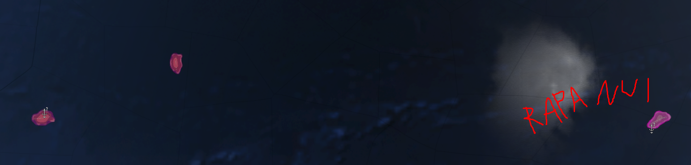
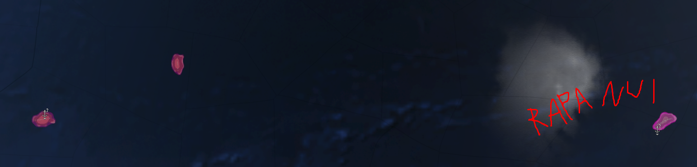
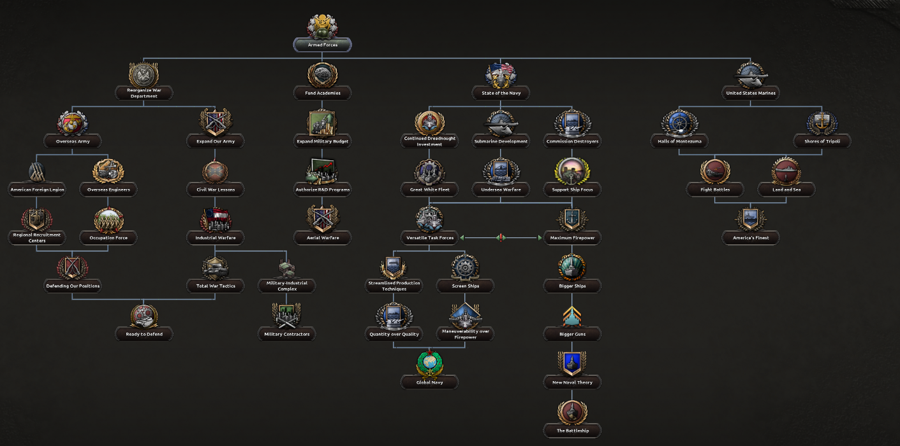
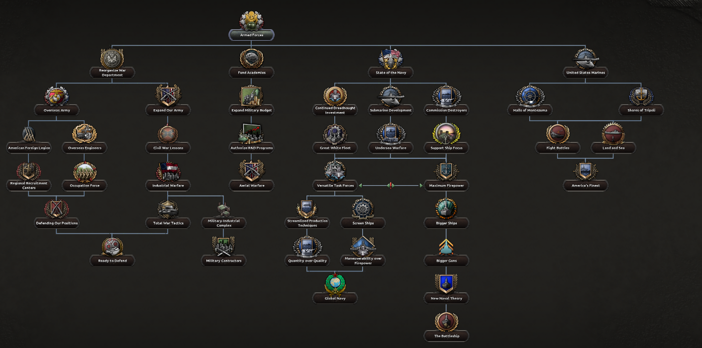

Development Diaries
Follow our journey of creating and improving Rise of Nations

Rise of Nations Redux!
March 17, 2025
Rise of Nations ends. Rise of Nations Redux lives on!

Japanese Rework WW2
Febuary 28, 2025
Finally Japan got the love it deserved with the new rework.

Indian Revamp WW2
Febuary 19, 2025
Indian tree is finally a functional mess instead of a disfunctional one.
Germany Revamp
December 24, 2024
German WW2 focus tree had a very poor design/no design at all... It was just a bunch of mods and trees mixed together and called a day but not anymore!
Technical Imrpovements
December 22, 2024
The mod has been in a really bad technical state for a very long time. Those changes and plans should imrpove this in the future.
WW1 Prelude Content
December 14, 2024
Since the last Thursday we have moved the mod so much forward it's really hard to make a proper title as there's so much stuff.

American Rework DNC
December 6, 2024
Thanks to Mike's work we have a fully fleshed out American focus tree for the 1900 start date.


.png)

 

.png)


.png)
 
